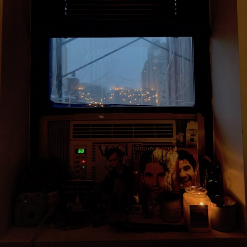

This webpage is by Abby Dodes
This webpage is for the Spring 2021 Journalism Design Toolkit class as part of the Journalism+Design department at Eugene Lang College for Liberal Arts at the New School University.


Abby Dodes is a freshman at Eugene Lang studying Culture & Media!
Her favorite actor is Darren Criss
look at my photos
look at my poster
The back end of this webiste